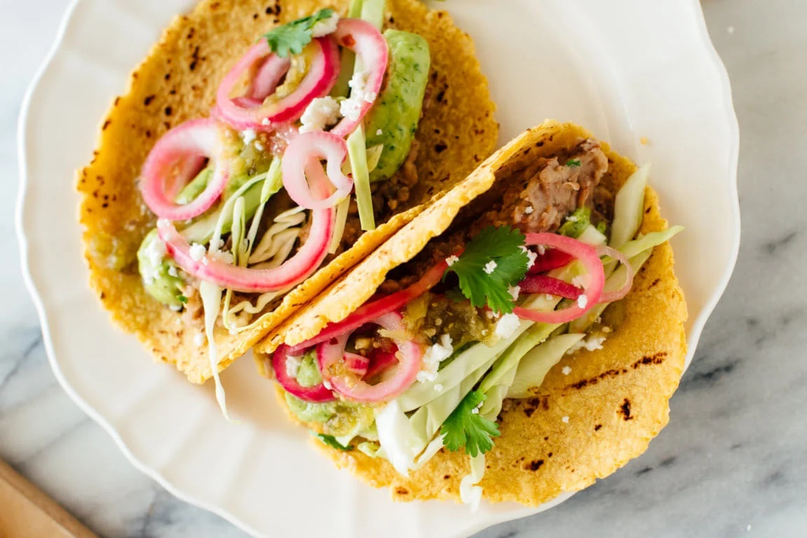

Veggie Tacos
Ingredients:
- Quick-pickled onions
- Creamy avocado dip
- Easy refried beans
- 8 corn tortillas
Recommended garnishes:
- Salsa verde
- Shredded green cabbage
- Crumbled Cotija or feta cheese
- Chopped fresh cilantro
- Lime wedges
Instructions:
- Prepare the onions, avocado dip, and beans as directed, in that order.
- Once they’re ready, warm the tortillas in a large skillet over
medium heat in batches, flipping to warm each side. Alternatively,
you can warm them directly over a low flame on a gas range. Stack the
warmed tortillas on a plate and cover with a tea towel to keep warm.
- To assemble the tacos, spread refried beans down the center of each
tortilla. Top with avocado dip and onions (for reference, I used all
of the beans and about half of the avocado dip and onions). Finish
the tacos with garnishes of your choice, and serve immediately.
- Leftover components are best served separately; reheat the tortillas
and beans before serving. Leftover pickled onions and avocado dip are
great on quesadillas, nachos or tortilla chips, sandwiches, etc.
